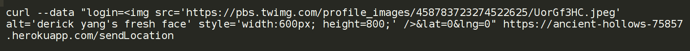
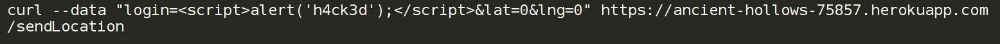
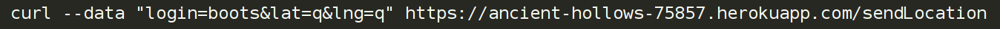

Security Assessment of Historic Landmarks - Comp20
Prepared by Olivia MacDougal • 4/23/2016
Introduction
This assessment tests the security of the Historic Landmarks web application and server developed by @dyang108 for Comp 20 Assignment 2 and Assignment 3. The Historic Landmarks web application consists of a front-end that displays the user’s current location as well as all of the historic landmarks within a one mile radius of the user. The landmarks are retrieved from a database and all checkins to the Historic Landmarks application are stored in another database. The server is part of a Heroku app/webpage that handles the requests and also can return information about specific checkins. Unfortunately, there are many web security vulnerabilities - especially the POST command to the server - that make this application easily hackable. I have been "hired" to identify and analyze three of the vulnerabilites present in Derick’s Historic Landmarks site.
Methodology
As suggested in the assignment 4 specification, I first carried out "black-box" testing - attacking his website without knowing what the actual code looked like. Although I tried to use the Burp Suite, I was unable to get that to work so I simply used curl to send data to his Heroku server. I found a number of vulnerabilities by sending different types of data. Next, I reviewed his code to find other security issues.
Abstract of Findings
Most of the major security issues I found while black-box testing resulted from accepting almost anything as user input. There were essentially no checks or limitations on what the user could send back to the server which seriously affected the Heroku webapp and also the database. After finishing black-box testing, I reviewed my client's source code and confirmed that there were very few precautions on user inputted data. Futhermore, I discovered that the checkins database had a major privacy flaw that allowed anyone to retrieve the entirety of the data in the database. I attempted to crash his server by writing a script that inserted garbage into his database, but was not successful, so I did not include an analysis of this issue. However, I would recommend putting a cap on the number of times a user can send data to the checkins server. I found many security issues with my client's website that leave his code and site vulnerable to malicious attacks and his user's data open for exploitation.
Issues Found
Cross-Site Scripting
- Location: Affects POST API
- Severity: High
This is a very serious vulnerability because anyone can send any HTML or JavaScript, including functions. This malicious code can literally change the display and functionality of the site, which is why it is given the highest ranking.
- Description of the Issue:
My client’s website is vulnerable to cross-site scripting because there is essentially no check for the quality or validity of user inputted data. My client’s website will execute any code snippets that are submitted as parameter’s to the POST request. Although HTML and CSS injection is very bad, injection of Javascript (the main concern with XSS) is a very severe security vulnerability. None of the code that I injected into my client’s website and database was that malicious or harmful - but it should be very obvious that it could a malicious attacker could cause some serious damage to the website and anyone using my client’s website.
- Proof of Vulnerability:
For example, running

will insert a picture of the client into the database and will show up on the homepage (see Figure 1). After performing many types of HTML/CSS injections I essentially defaced his website. Another example, which is almost more grave than the last example is when I injected Javascript into his website by running
 to create a popup alert anytime anyone loads his page (see Figure 2).
- Resolution:
One solution that was discussed during class is doing some simple analysis of user inputted data. Before inserting the user inputted data into the database, my client could parse the data for common characters that are code-related and to reject user inputted data that contains these characters (the most obvious characters to reject would be tags).
Data Verification and Storage of Garbage Data
- Location: Affects POST/GET API
- Severity: Medium
This is a slightly less serious security issue only because it does not have an impact on the web application itself; however, the database can easily be filled with garbage data.
- Description of the Issue:
Though similar to above, my client does not check for the quality of the user-inputted data. My client does send an error if a user does not send anything in the fields of the expected parameters, but otherwise does not check if the data is reasonable. This is an issue because a user could fill both the checkins database with garbage values (unreasonable logins, lats and lngs). The GET API should only be returning good, reasonable data to a client that makes a request, and my client’s code does not guarantee that the data stored in the database is good.
- Proof of Vulnerability:
For example, running
will insert null values into lat and lng in the database. As is obvious from the picture below (see Figure 3), any value essentially could be given as the parameters and stored into the database including large numbers that are not reasonable lat/lng values.
- Resolution:
Lucky for my client, this is an easy issue to fix. My client should place some restrictions on the values accepted by the user for lat and lng values (for example, returning an error message if the user sends them "q" as a longitude value). I believe there may also be a way to require or verify using the user's IP address that their lat/lng are mostly reasonable, if not exact.
Improper Access to Database
- Location: Affects GET API
- Severity: Medium
This issue is relatively severe because it is a serious violation/breach of user data privacy. The GET API should only return checkins based on a single user's login, but I was able to display all of the checkins and therefore see all of the past user's of my client's application.
- Description of the Issue:
My client's GET API allows a user to find all the checkins related to a login name using a query string. Unfortunately, my client take almost no precautions to restrict the content or format of the query string. With a simple hack, I was able to display everything in the checkins database, which poses a severe risk to the privacy of the users of my client's application. By adding different parameters to the query string I was even able to cause the server to crash with an Application Error. My client needs to take many more precautions when allowing the user to get back data from the database using a query string, because any malicious attacker can gain access to private, sensitive user data.
- Proof of Vulnerability:
By adding the query string "login[$ne]=hacked" I was easily able to display everything in the checkins database (see Figure 4). [$ne] is a request to the database to return all values that are not equal to (in this case) "hacked" - an easy way to display all of the data. Next, I tried adding the query string "login[$nin]=hacked", which caused an Application Error (see Figure 5). [$nin] is a request to the database to return all documents where the field value is not specified, or does not exist.
- Resolution:
My client has no check for the quality of the query string passed as the argument. I would recommend before using the request.query.login, my client should do at least some preliminary checks on the query string.
Conclusion
Though I have only elaborated on three security and privacy issues with my client's web application, these issues are serious enough to render the site not functional and the user's data easily accessible and exposed to further exploit. I would also like to point out that there are MANY more places to improve the security of my client's code. First and foremost, checking and sanitizing user inputted data can easily solve many of the issues explored above - my client blindly trusts the validity and quality of user inputted data in almost every location where data is coming in leading to major security vulnerabilites. If my client follows my recommendations, his website should be protected against at least basic security and privacy issues. Until more security precautions are added, I would discourage any user from using his web application and server unless they want to get "h4ck3d".